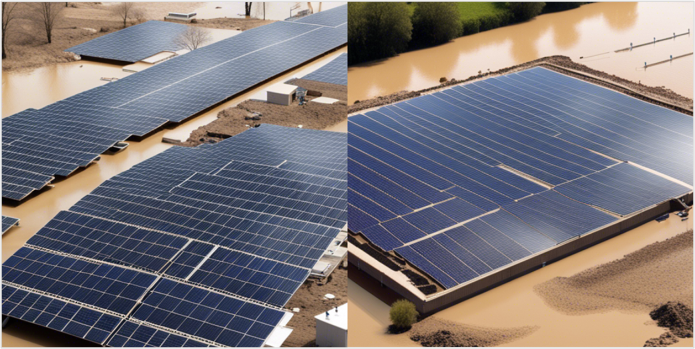
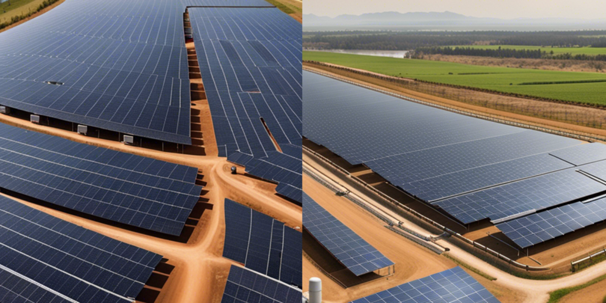

Our Comprehensive Services
Cutting-edge solutions for flood risk management and water resource engineering

Flood Risk Assessments (FRA)
Comprehensive flood risk studies for new developments and existing infrastructure.
- Site-specific flood zone analysis
- Rainfall-runoff modeling
- Historical flood data integration
- Risk mapping & mitigation strategies

Hydraulic Modelling
Advanced simulation of water behavior in rivers, drainage systems, and floodplains.
- 1D/2D hydraulic modeling
- Flow path simulations
- Catchment area studies
- Infrastructure impact analysis
Dam Break & River Flood Modelling
Critical analysis of dam breach scenarios and river flooding impacts.
- Dam breach scenario modeling
- Inundation mapping
- Evacuation planning
- Real-time propagation analysis
Climate Risk Flood Analysis
Future climate change impact assessment on flood risk and adaptation strategies.
- Climate scenario modeling
- Sea-level rise assessments
- Long-term risk mapping
- Adaptation strategies
Levelling and Grading
Land shaping for optimal water flow and stable foundations.
- Grading & earthwork calculations
- Drainage optimization
- Cut/fill optimization
- Digital Terrain Modelling